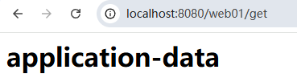
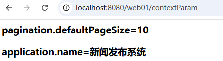
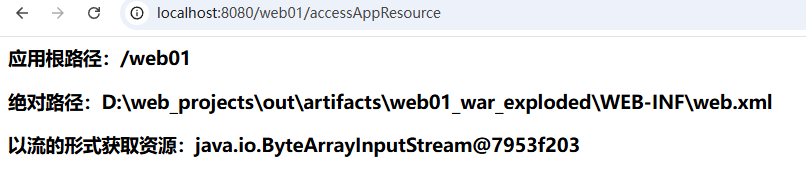
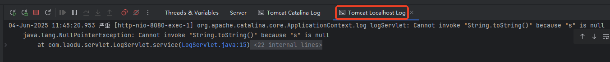

jakarta.servlet.ServletContext。web.xml中配置的上下文参数第一种方式：通过 ServletConfig 来获取
ServletConfig config = this.getServletConfig();
ServletContext application = config.getServletContext();
第二种方式：直接在 Servlet 类中获取
ServletContext application = this.getServletContext();
参考 Jakarta EE 10的 API 帮助文档。这里只看它的常用方法：
// 向应用域中绑定数据
void setAttribute(String name, Object object);
// 通过name获取应用域中绑定的数据
Object getAttribute(String name);
// 根据name删除应用域中绑定的数据
void removeAttribute(String name);
// 通过上下文初始化参数的name获取value。
String getInitParameter(String name);
// 获取所有上下文初始化参数的name
Enumeration<String> getInitParameterNames();
// 获取应用的根路径
String getContextPath();
// 获取绝对路径
String getRealPath(String path);
// 获取 指向某个文件的输入流
InputStream getResourceAsStream(String path);
// 将指定消息写入Servlet日志文件
void log(String message);
void log(String message, Throwable throwable);
放在应用域中的数据所有 Servlet 共享，所有线程共享，注意线程安全问题，如果是热点数据，共享数据，少量数据，并且低频变更，建议存储到应用域中。
相关的方法包括以下三个：
// 向应用域中绑定数据
void setAttribute(String name, Object object);
// 通过name获取应用域中绑定的数据
Object getAttribute(String name);
// 根据name删除应用域中绑定的数据
void removeAttribute(String name);
先简单测试一下这几个方法的使用。具体的应用场景等学完监听器之后再看。
编写两个 Servlet：SetDataServlet、GetDataServlet。
在 SetDataServlet 中向应用域中绑定数据。在 GetDataServlet 中从应用域中读取绑定的数据。在 RemoveDataServlet 中从应用域中删除数据。
package com.jkweilai.servlet;
import jakarta.servlet.*;
import java.io.IOException;
public class SetDataServlet extends GenericServlet {
@Override
public void service(ServletRequest req, ServletResponse res) throws ServletException, IOException {
ServletContext application = this.getServletContext();
application.setAttribute("applicationData", "application-data");
}
}
package com.jkweilai.servlet;
import jakarta.servlet.*;
import java.io.IOException;
public class GetDataServlet extends GenericServlet {
@Override
public void service(ServletRequest req, ServletResponse res) throws ServletException, IOException {
ServletContext application = this.getServletContext();
Object applicationData = application.getAttribute("applicationData");
res.getWriter().print("<h1>" + applicationData + "</h1>");
}
}
package com.jkweilai.servlet;
import jakarta.servlet.*;
import java.io.IOException;
public class RemoveDataServlet extends GenericServlet {
@Override
public void service(ServletRequest servletRequest, ServletResponse servletResponse) throws ServletException, IOException {
ServletContext application = this.getServletContext();
application.removeAttribute("applicationData");
}
}
<servlet>
<servlet-name>setData</servlet-name>
<servlet-class>com.jkweilai.servlet.SetDataServlet</servlet-class>
</servlet>
<servlet-mapping>
<servlet-name>setData</servlet-name>
<url-pattern>/set</url-pattern>
</servlet-mapping>
<servlet>
<servlet-name>getData</servlet-name>
<servlet-class>com.jkweilai.servlet.GetDataServlet</servlet-class>
</servlet>
<servlet-mapping>
<servlet-name>getData</servlet-name>
<url-pattern>/get</url-pattern>
</servlet-mapping>
<servlet>
<servlet-name>removeData</servlet-name>
<servlet-class>com.jkweilai.servlet.RemoveDataServlet</servlet-class>
</servlet>
<servlet-mapping>
<servlet-name>removeData</servlet-name>
<url-pattern>/remove</url-pattern>
</servlet-mapping>
测试，发送三个请求：

<init-param>属于 Servlet 初始化参数，局部的。如果这个配置是某一个 Servlet 使用，可以使用这种方式。
<context-param>属于应用上下文初始化参数，全局的。如果这个配置是所有 Servlet 共享的，可以使用这种方式。
上下文初始化参数在 web.xml 文件中配置如下：
<context-param>
<param-name>pagination.defaultPageSize</param-name>
<param-value>10</param-value>
</context-param>
<context-param>
<param-name>application.name</param-name>
<param-value>新闻发布系统</param-value>
</context-param>
<servlet>
<servlet-name>contextParam</servlet-name>
<servlet-class>com.jkweilai.servlet.ContextParamServlet</servlet-class>
</servlet>
<servlet-mapping>
<servlet-name>contextParam</servlet-name>
<url-pattern>/contextParam</url-pattern>
</servlet-mapping>
获取上下文初始化参数的代码：
package com.jkweilai.servlet;
import jakarta.servlet.*;
import java.io.IOException;
import java.io.PrintWriter;
import java.util.Enumeration;
public class ContextParamServlet extends GenericServlet {
@Override
public void service(ServletRequest req, ServletResponse res) throws ServletException, IOException {
res.setContentType("text/html;charset=UTF-8");
PrintWriter out = res.getWriter();
ServletContext application = this.getServletContext();
Enumeration<String> initParameterNames = application.getInitParameterNames();
while (initParameterNames.hasMoreElements()) {
String paramName = initParameterNames.nextElement();
String paramValue = application.getInitParameter(paramName);
out.print("<h3>" + paramName + "=" + paramValue + "</h3>");
}
}
}
运行结果：

访问应用资源涉及到以下三个方法：
// 获取应用的根路径
String getContextPath();
// 获取绝对路径
String getRealPath(String path);
// 获取 指向某个文件的输入流
InputStream getResourceAsStream(String path);
访问应用资源的 Java 代码：
package com.jkweilai.servlet;
import jakarta.servlet.*;
import java.io.IOException;
import java.io.InputStream;
import java.io.PrintWriter;
public class AccessAppResourceServlet extends GenericServlet {
@Override
public void service(ServletRequest request, ServletResponse response) throws ServletException, IOException {
response.setContentType("text/html;charset=UTF-8");
PrintWriter out = response.getWriter();
ServletContext application = this.getServletContext();
// 获取应用根路径
String contextPath = application.getContextPath();
out.print("<h3>应用根路径：" + contextPath + "</h3>");
// 获取绝对路径（路径参数编写时要注意：以"/"开始，从应用的根路径下开始找。）
String realPath = application.getRealPath("/WEB-INF/web.xml");
out.print("<h3>绝对路径：" + realPath + "</h3>");
// 以流的形式获取资源（路径参数编写时要注意：以"/"开始，从应用的根路径下开始找。）
InputStream in = application.getResourceAsStream("/WEB-INF/web.xml");
out.print("<h3>以流的形式获取资源：" + in + "</h3>");
}
}
<servlet>
<servlet-name>accessAppResourceServlet</servlet-name>
<servlet-class>com.jkweilai.servlet.AccessAppResourceServlet</servlet-class>
</servlet>
<servlet-mapping>
<servlet-name>accessAppResourceServlet</servlet-name>
<url-pattern>/accessAppResource</url-pattern>
</servlet-mapping>
运行结果：

日志记录涉及到以下两个方法：
// 将指定消息写入Servlet日志文件
void log(String message);
void log(String message, Throwable throwable);
这两个方法可以通过 ServletContext对象来调用，也可以直接在 Servlet类中使用 this来调用，这是因为在 GenericServlet类中扩展了这两个方法，大家可以再翻一下 GenericServlet 的源码：
public class GenericServlet{
// ...
// 额外扩展的方法
public void log(String message) {
getServletContext().log(getServletName() + ": " + message);
}
// 额外扩展的方法
public void log(String message, Throwable t) {
getServletContext().log(getServletName() + ": " + message, t);
}
// ...
}
可以看到，扩展的这两个方法，其实底层还是调用了 ServletContext对象的 log方法。
编写程序测试这两个方法：
package com.jkweilai.servlet;
import jakarta.servlet.GenericServlet;
import jakarta.servlet.ServletException;
import jakarta.servlet.ServletRequest;
import jakarta.servlet.ServletResponse;
import java.io.IOException;
public class LogServlet extends GenericServlet {
@Override
public void service(ServletRequest req, ServletResponse res) throws ServletException, IOException {
try {
String s = null;
s.toString();
} catch (Exception e) {
this.log(e.getMessage(), e);
}
}
}
<servlet>
<servlet-name>logServlet</servlet-name>
<servlet-class>com.jkweilai.servlet.LogServlet</servlet-class>
</servlet>
<servlet-mapping>
<servlet-name>logServlet</servlet-name>
<url-pattern>/log</url-pattern>
</servlet-mapping>
启动 Tomcat 服务器，打开浏览器，地址栏输入 URL：http://localhost:8080/web01/log
在控制台上查看日志（Tomcat 独立部署时，日志会输出到****logs/localhost.YYYY-MM-DD.log****和****catalina.out****）：

ServletContext（全局共享）Servlet有自己独立的ServletConfig（存放私有配置）Servlet本身是处理请求的核心组件，它能通过ServletConfig获取ServletContext。